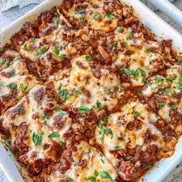

Lasagna

A hot dish of lasagna
Lasagna is a classic Italian oven-baked dish (al forno) made by layering wide, flat pasta sheets with filling, such as ragù (meat and tomato sauce), béchamel sauce, and cheeses like mozzarella, ricotta, and Parmesan. It is a popular, hearty, and comforting meal often served in casserole form, with popular regional variations found throughout Italy.
Ingredients
For the Meat sauce:
- Onion
- Garlic
- Carrot
- Celery
- Soffrito
- Beef
- Canned tomato and tomato paste
- Red wine
- Seasonings - beef bouillon cubes (stock cubes), bay leaves, thyme, oregano, Worcestershire sauce
For the Béchamel (White) sauce:
For assembling:
Steps
- Prepare the meat sauce; cook it meat sauce long and slow.
- Prepare the white sauce
- Smear a bit of meat sauce on the base first; it stops the lasagna sheets from sliding around;
- Layer 1 - top with meat sauce, bit of white sauce
- Layer 2 -lay out more lasagna sheets, then top with more meat sauce and more white sauce
- Layer 3 -repeat again, lasagna sheets, meat sauce then white sauce; and
- Topping -cover with lasagna sheets, pour over remaining white sauce then sprinkle with cheese.
- Put it in the oven and voila!
Home